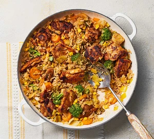

One-pot chicken and rice

Description
Make a wholesome chicken dinner for all the family in under an hour. Plus, you only need one pan, so there’s less washing-up
Ingredients
- 1 tbsp smoked paprika
- 1 tbsp ground coriander
- 2 garlic cloves, finely grated
- 2 tsp rapeseed oil
- 600g boneless, skinless chicken thighs, halved
- 700ml hot vegetable bouillon, made with 2 tsp powder
- 250g easy-cook brown rice
- 320g leeks, washed and sliced
- 1 tsp dried oregano or 1 tbsp fresh thyme
- 2 bay leaves (optional)
- 320g mixed frozen vegetables (we used sliced carrots, broccoli florets and sweetcorn)
Steps
- Put the spices, garlic and oil in a large bowl and mix well. Add the chicken and turn in the mixture until well coated. Heat a large non-stick pan that has a lid, then fry the chicken, uncovered (without extra oil) over a medium-high heat for 5 mins until browned, turning the chicken halfway to brown on both sides. Remove from the pan and set aside on a plate.
- Pour the bouillon into the pan, stirring well to incorporate any garlicky bits that may have stuck to the base of the pan, then stir in the rice, leeks, oregano or thyme and bay, if using. Lay the chicken on top, then cover the pan and bring to the boil. Turn down the heat and simmer for 20 mins.
- Stir in the frozen vegetables, then cover and simmer for about 5 mins to heat through. Leave to stand for about 5-10 mins, then lightly mix and serve.